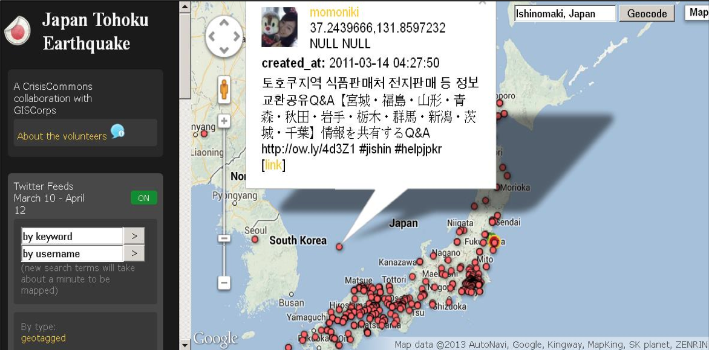

Crowd-Sourcers Assemble!
Hands-on Mobile Data Collection
Overview
- Preparation!
- The Background on Mobile Data Collection (MDC)
- Types of MDC
- Passive, Public, Crowdsource, Private
- MDC Exercise: Ohmage
- MDC Growth Continues
Preparation!
Install our Mobile Data Collection App
- Download the data collection app:
- iOS - get it from the App Store - "ohmage MWF"
- Android - Google Play - "ohmage"
- (We'll show this info again)
The Background on Mobile Data Collection (MDC)
Student Smartphone Ownership and Interaction
- Overall US smartphone ownership is 58% (Jan 2014)
- College-aged ownership is 83%
- Undergrads have 2-3 internet-capable devices
- They want to use them!
- Interact with their institution and coursework
Growth of Bring-your-own-everything (BYOE)
- data gathering in the field using these devices
- Past: tablets and laptops
- Now: "companion" devices
- Measure habits, publish opinions, track activities
Mobile Data Collection (MDC)
- gathering with a personal mobile device
- Cheaper, easier, more ubiquitous
- Complex. Phones have camera, microphone, accelerometer, GPS, etc.
Types of MDC
The 4 Types of MDC
- Passive
- Public
- Crowdsourced
- Private
Passive MDC
Passive MDC
- In the background, no interaction needed
- Just install an app and turn it on
- Collects data such as accelerometer, GPS, SMS log
Passive MDC Example: Actigraphy
- Collects data on rest and activity cycles
- Past: custom devices like Pedometers
- Actigraph data + GPS location data = Visual Map!
- Some Higher Ed Uses: gauge use of campus bike paths, health studies, and more
Passive MDC: Actigraphy

Mobilizing Health (link)
Public MDC
Public MDC
- Gathers data from public social media apps like Twitter, Facebook, Foursquare
- Combine Social media data with location data for interesting visualizations
- Here, research intent is defined after public data have been created
- Researchers can use existing data sets, but they have an expiry date
Public MDC Example: Aggregation with GIS
- Show activity after the Japan Tohoku earthquake and tsunami
- Location + Twitter postings
- Volunteers from several institutions organized this info by hashtag, requests for help, info about evacuation, etc.
Public MDC: Aggregation

Japan Tohou Earthquake (link)
Public MDC Example: Social Media and GPS Data Viz
- University administrations can use BYOE
- Social.Chapman, collecting content from Chapman University's Facebook, Twitter, Instagram, Wordpress communities
- Aggregated in real time, know "what is happening now"
- searchable, archived database of social media activity
- ID trends, evaluate branding strategies, monitor consistency of community's response
Crowdsourced MDC
Crowdsourced MDC
- general public or an online community - "citizen scientists" - contributes collected content w/o compensation
- Example: Saving humanity from asteroids! Nasa's "Asteroid Data Hunter" for large collections of sky images
- Higher Ed: solving campus issues (like where to locate trash bins) but also academic field research
Crowdsourced MDC Example: Stopping Invaders (plants)!
- What's Invasive gathers data from citizen scientists, started by UCLA, now maintained by U of Georgia
- hikers and locals download an Android app and submit photos of invasive plants they see
- GPS info included, scientists can locate plants and analyze growth patterns
- 300 participants, 11,000 observations, 200 invasive species ID'ed in 113 sites in US, Scandanavia, Middle East, Asia
Crowdsourced MDC: Tracking
What's Invasive! Community Data Collection (link)
Private MDC
Private MDC
- Faculty, researchers, & students ask: which data?
- Mobile device data collected, uploaded to a server for private aggregation, research, analysis
- Process and data are private
- Image, GIS, timestamp, video, audio, accelerometer, and others
- And use private social networks like Yammer, Jive, Chatter
- For research, class field study, self-study, community improvement, health monitoring, political opinion gathering, more
Private MDC Example: STEM Education in High Schools
- Mobilize Project research program from UCLA's CENS, the NSF, The Computer Science Teacher's Assoc., Google, LA USD
- Based on ohmage platform
- Engage high school students with STEM and computational thinking
- Participatory Sensing hands-on, inquiry-based curricular units and teacher professional development for CS, math, and science high school classes
Private MDC: Eduation
Mobilize: Snack Data Viz (link)
Private MDC Example: In-Field Classwork
- 2013 Winter quarter, UCLA labor relations studies class study
- Collected data from labor union members across campus
- Class defined survey instruments for later interviews
- Using mobile devices to upload data afterwards
- Final survey instrument: 33 questions, 10-15 minutes with an interviewee, 225 interviews, 5 teams
- Data analyzed, visualized across each team, combined with other teams
MDC Exercise: ohmage
What is ohmage?
- An open-source research platform
- ohmage collects data with surveys containing text responses, media, and custom fields
- Dashboard: Define what information to collect, read reports
- Mobile apps: The MDC side of ohmage
Survey Creation Demo: ohmage Dashboard
- Creating a campaign
- A simple survey
Interactive Exercise: Time to Assemble!
Prep for MDC with ohmage on your device
- Download the data collection app:
- iOS - get it from the App Store - "ohmage MWF"
- Android - Google Play - "ohmage"
Interactive Exercise: Background and Choosing Questions
- A UC Scenario: Drivers and Police
- What questions to ask?
Interactive Exercise: Assigning Roles
- Take a card!
- Got a face card? Your role is Police
- Got any other card? Your role is Driver
Interactive Exercise: Using the App
- Open the ohmage app on your device
- Driver Login info:
username: ucsf.driver
password: Conference9000! - Police Login info:
username: ucsf.police
password: Conference9000! - Exercise Rules Review
Completing Your Survey
Interactive Exercise: Reviewing our Data
The ohmage Dashboard
MDC Growth Continues
MDC Growth Continues
- Students want to use their devices
- Researchers want to collect new data on participants like location-triggered surveys
- Private MDC open-source platforms like ohmage continue to emerge
Experiment more with MDC!
- Collect new data
- Less risk, less cost
- Greater engagement
THANK YOU
Any Questions?
wrenr.github.io/cordova-presentation/assemble/
wrenr [GitHub] / vpham21 [GitHub]
Introduction based on: Rocchio, Rosemary A., An Introduction to BYOE Mobile Data Collection: An ECAR Mobile Strategy and Application Development Working Group Paper, Educause Center for Analysis and Research, April 2014, research report